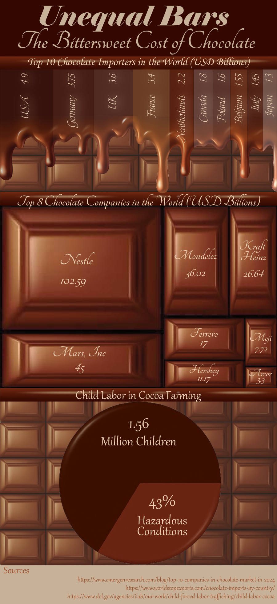
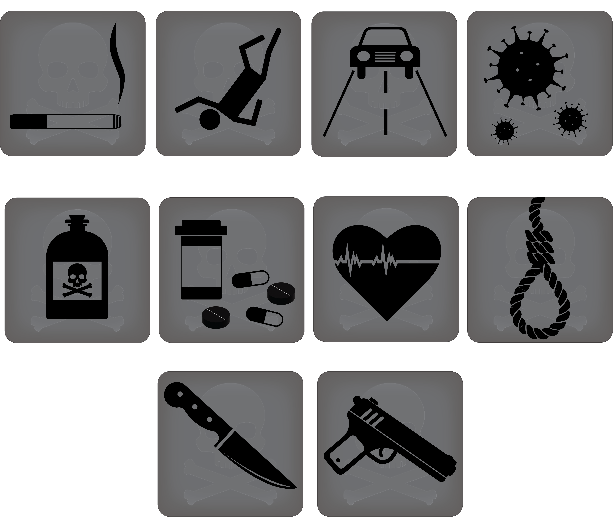
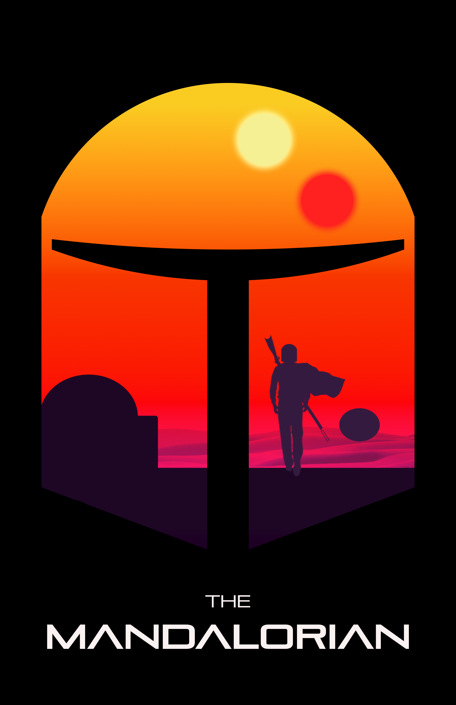

Design & Information Visualization
This section highlights proficiency in Adobe Illustrator and Adobe Photoshop for visual communication, data display (Infographics), and conceptual manipulation.
Information Science & Visual Assets (Adobe Illustrator)
{kind=link}

Infographic: Unequal Bars, The Bittersweet Cost of Chocolate
Designed to visualize complex data points for the Information Science minor, and Journalism major focusing on clarity, hierarchy, and data narrative.
Illustrator{kind=link}

Icon Set: Causes of Death
Vector asset creation for web or print, demonstrating versatility in style and visual branding guidelines.
IllustratorCreative Manipulation & Compositing (Adobe Photoshop)
{kind=link}

Conceptual Poster: The Mandalorian
Raster image compositing and manipulation using advanced layer techniques, textures, and font selection.
Photoshop[Dreams Series Photo Preview]
"A Night in the Dreams" Photo Series
Demonstrates complex photo manipulation, masking, and non-destructive editing for conceptual visual storytelling.
Photoshop